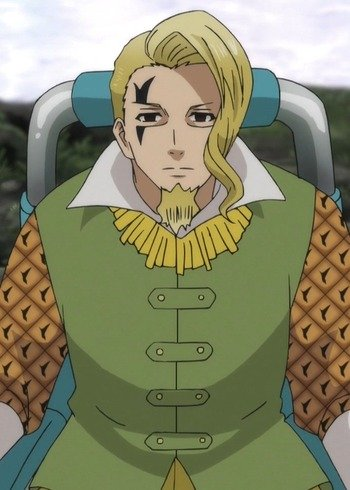
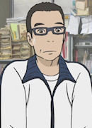

|
Byakuya Ishigami |
|
Byakuya Ishigami is the adoptive father of Senku. He was an astronaut residing on the International Space Station in space during Petrification event on Earth. He is a very supportive and caring father for Senku. He is a courageous man who believe that he could help other people. His humor is describe as dark but unfailingly. He is a kind, playful and mischievous man who finds a way to amuse himself. He believes Senku can rebuild human society one day. |
 |
Gyousou Saku |
|
Gyousou Saku is a famous general of Tai and the King of Tai. Despite his manner, he comes across as violent as a warrior should be. He has a look that will give his enemies fear to fight him. His hardness is what is need in a kingdom. He can balance power and compassion, but his pride can take over. |
|  |
Gowther |
- The Seven Deadly Sins: Wrath of the Gods
|
Gowther is an elite warrior of the Demon Clan, serving directly under the Demon King as the Selfessness of the Ten Commandments. Unlike other demons, he seems to be a kind and caring person. |
 |
Lancelot |
|
Lancelot is a docter who ally of Red Whirlwind. He has a wife and two daughter. |
 |
Looker |
|
Looker is an officer of the officer for the International Police who investigate villianous crime. He has worked with Ash and Co. a couple of times. |
 |
Maes Hughes |
- Fullmetal Alchemist
- Fullmetal Alchemist: The Conqueror of Shamballa
- Fullmetal Alchemist: Reflections
- Fullmetal Alchemist: Premium Collection
- Fullmetal Alchemist: Brotherhood
- Fullmetal Alchemist: Brotherhood Specials
- Fullmetal Alchemist: Brotherhood - 4-Koma Theater
|
Maes Hughes is one of Roy Mustang's buds. He is a loving and devoted father and husband. He loves his wife, Garcia, and his daughter, Elicia. |
| |
Satan |
|
Satan is the ruler of Gehenna and the father of Rin, Yukio and the Eight Demon Kings. He has a cruel and reckless personality. He is very extremely competitive. He lacks any real moral compass and had no concept of right or wrong. |
|  |
Sawada |
|
Sawada is Saotome and Makoto's teacher. He cares about his students and there academics. |
 |
Shiro Fujimoto |
- Blue Exorcist
- Blue Exorcist: Kuro's Trip Away From Home
- Blue Exorcist Movie
|
Shiro Fujimoto is a priest, an Exorcist, the Paladin of the True Cross Order, and the adoptive father of the Okumura twins. He is quite mysterious but has a protective personality and kind heart. He raised Rin and Yukio with all of his heart as if they werer his own children. Despite being a priest, he is immature and jokes around a bit. He is a womanizer and likes womens with hig breasts. He can have a cold-hearted personality.Shiro changed his tactics to understand and reason with demons before using force. |
 |
Shuichi Aizawa |
- Death Note
- Death Note Rewrite
|
Shuichi Aizawa is a part of L's investigation team. He assists the team when necessary as part of the police. |
 |
Shuuji Hanamoto |
- Honey and Clover
- Honey and Clover Specials
- Honey and Clover II
|
Shuuji Hanamoto is a professor at an art university, and Hagumi's overproctective cousin. He is Hagumi's real father figure for his highly devoted to making sure Hagu happy. Shuuji is a wise man, but becomes quite nervous at times and shutters. |
 |
Toma E. Fiore |
- Fairy Tail
- Fairy Tail (2014)
- Fairy Tail Movie 2: Dragon Cry
- Fairy Tail: Final Season
|
Toma E. Fiore is the king who ruled over Kingdom of Fiore and he is father of Hisui E. Fiore. He enjoys entertainment, watching good magic fights. He can be quite childish at times. He does have a dark personality but is often seen smiling and dancing. |


.jpg)